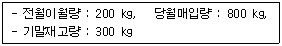
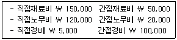
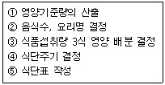

한식조리기능사 (2005-10-02 기출문제)
1과목: 식품위생 및 법규
1. 식품위생감시원의 직무에 해당되지 않는 것은?
- 종업원의 복지후생의 관한 사항
- 시설기준의 적합여부의 확인ㆍ검사
- 종업원의 건강진단 및 위생교육의 이행여부의 확인ㆍ지도
- 영업자의 법령이행여부에 관한 확인ㆍ지도
(정답률: 71%)

2. 조리사 면허증의 취소처분을 받을 때 반납은 누구에게 하는가?
- 보건복지부 장관
- 시장ㆍ군수ㆍ구청장
- 식품의약품안전청장
- 보건소장
(정답률: 70%)
3. 식품위생법상에서 식품위생이라 함은 무엇을 말하는가?
- 음식에 관한 위생을 말한다.
- 기구 또는 용기, 포장의 위생을 말한다.
- 식품 및 식품첨가물을 대상으로 하는 위생을 말한다.
- 식품, 식품첨가물, 기구 또는 용기, 포장을 대상으로 하는 음식에 관한 위생을 말한다.
(정답률: 92%)
4. 수출을 목적으로 하는 식품 또는 식품첨가물의 기준과 규격은?
- 수입자가 요구하는 기준과 규격에 의함
- 국립검역소장이 정하여 고시한 기준과 규격에 의함
- F. D. A의 기준과 규격에 의함
- 산업자원부장관의 별도 허가를 득한 기준과 규격에 의 함
(정답률: 61%)
5. 조리사의 면허를 받을 수 없는 사람은?
- 정신지체인
- 비만한 사람
- 위산과다한 사람
- 약물중독자
(정답률: 84%)
6. 화농성 상처가 있는 식품취급자에 의해 감염되기 쉬운 식중독균은?
- 포도상구군
- 살모넬라균
- 장염 비브리오균
- 클로스트리디움 보툴리늄
(정답률: 80%)
7. 식품의 점착성을 증가시키고 유화 안정성을 좋게 하는 것은?
- 호료
- 팽창제
- 강화제
- 용제
(정답률: 47%)
8. 세균의 번식이 잘 되는 식품과 가장 거리가 먼 것은?
- 온도가 적당한 식품
- 습기가 있는 식품
- 영양분이 많은 식품
- 양이 많은 식품
(정답률: 75%)
9. 식품위생법에서 의미하는 식품의 원료, 제조, 가공 및 유통의 각 단계에서 발생할 수 있는 위해요소를 분석 관리하여 식품의 안정성을 확보하는 제도란?
- 회수제도(Recall)
- HACCP
- 공표세포
- IOS 인증
(정답률: 89%)
10. 지방성분이 분해되어 독성물질이나 악취를 발생시키는 경우를 일컫는 말은?
- 산패
- 발효
- 호흡
- 부패
(정답률: 64%)
11. 빵을 구울 때 기계에 달라붙지 않고 분할이 쉽도록 하기 위하여 사용하는 첨가물은?
- 조미료
- 유화제
- 피막제
- 이형제
(정답률: 63%)
12. 알레르기성 식중독이 일어나기 가장 쉬운 식품은?
- 어묵
- 닭고기
- 꽁치
- 돼지고기
(정답률: 71%)
13. 버섯으로 인해 식중독을 일으키는 독성분은?
- 아마나타톡신(amaniltatoxin)
- 엔테로톡신(enterotoxin)
- 솔라닌(solanine)
- 아트로핀(atropine)
(정답률: 58%)
14. 광명단을 사용하거나 소성온도 이하로 구운 옹기독에 산성음식물을 넣으면 옹기벽에서 용출될수 있는 대표적 인 유해물질은?
- 주석(Sn)
- 납(Pb)
- 페놀(Phenol)
- 피시비(P. C. B)
(정답률: 50%)
15. 미생물을 살균하는데 사용하는 살균제 또는 소독제가 가져야 할 조건은?
- 냄새가 강한 것
- 침투력이 강할 것
- 살균력이 약할 것
- 인체에 독성이 강할 것
(정답률: 85%)
2과목: 식품학
16. 반건성유가 아닌 것은?
- 올리브유
- 옥수수유
- 면실유
- 참기름
(정답률: 40%)
17. 다음 유지 중 발연점이 가장 높은 유지는?
- 대두유
- 참기름
- 돼지기름
- 올리브유
(정답률: 62%)
18. 강한 유화작용을 갖고 있어 지방질 식품들의 유화제로 서 사용되고 있는 것은?
- 왁스
- 스테로이드
- 맥아당
- 레시틴
(정답률: 70%)
19. 전분 가루를 물에 풀어두면 금방 가라앉는 현상과 가장 관계가 깊은 것은?
- 전분이 완전히 물에 녹으므로
- 전분의 비중이 물보다 무거우므로
- 전분이 호화되므로
- 전분이 유화되므로
(정답률: 72%)
20. 검정 콩밥을 섭취하면 쌀밥을 먹었을 때 보다 어떤 영양소를 보충할 수 있는가?
- 단백질
- 탄수화물
- 지방
- 비타민
(정답률: 87%)
21. 다음 중 육장 단백질은?
- 헤모글로빈
- 콜라겐
- 미오신
- 엘라스틴
(정답률: 37%)
22. 채소와 과일의 가스 저장(CA저장)시 필수 요건이 아닌 것은?
- PH 조절
- 기체의 조절
- 냉장온도 유지
- 습도 유지
(정답률: 51%)
23. 유지의 산패에 영향을 미치는 인자가 아닌 것은?
- 온도
- 광선
- 수분
- 지방산의 탄소수
(정답률: 59%)
24. 어류의 보존성을 높이기 위한 가공품과 가장 거리가 먼 것은?
- 건어물류
- 염장어류
- 훈제어류
- 생선묵류
(정답률: 70%)
25. 일반적으로 단맛이 가장 큰 것은?
- 설탕
- 유당
- 과당
- 맥아당
(정답률: 85%)
26. 국수를 삶을 때 가장 적당한 물의 pH는?
- pH 2
- pH 6
- pH 10
- pH 14
(정답률: 64%)
27. 배당체 화합물이 아닌 것은?
- 시니그린(sinigrin)
- 안토시아닌(anthocyanin)
- 나린진(naringin)
- 테아닌(theanine)
(정답률: 26%)
28. 김치나 오이 절임을 오래 저장하면 갈색을 띠게 되는 것은 무슨 색소의 변화 때문인가?
- 카로티노이드(carotenoid)
- 클로로필(chlorophyll)
- 안토시아닌(anthocyanin)
- 안토잔틴(anthoxantyin)
(정답률: 53%)
29. 근육의 자기소화에 의해 나타나는 현상은?(오류 신고가 접수된 문제입니다. 반드시 정답과 해설을 확인하시기 바랍니다.)
- 휘발성 자방산의 감소
- 가용성 질소화합물의 증가
- 글리코겐(glycogen)의 증가
- 젖산의 증가
(정답률: 54%)
30. 우유는 100g 중에 당질 5g, 단백질 3.5g, 지방 3.7g이 들어 있다. 몇 ㎉를 내는가?
- 50.3㎉
- 67.3㎉
- 74.3㎉
- 82.3㎉
(정답률: 68%)
3과목: 조리이론과 원가계산
31. 표준조리 레시피를 만들 때 포함되어야 할 사항이 아닌 것은?
- 메뉴명
- 조리시간
- 1일 단가
- 조리방법
(정답률: 71%)
32. 조리용 기구의 표면 중 복사열을 흡수하기 쉬워 조리 온도를 신속히 높혀줄 수 있는 것은?
- 희고 거친 것
- 희고 반질반질한 것
- 검고 거친 것
- 검고 반질반질한 것
(정답률: 43%)
33. 계량법에 대한 설명 중 잘못된 것은?
- 황설탕은 꼭꼭 눌러 잰다.
- 물을 계량할 때는 그 메니스커스(meniscus) 양끝과 눈금을 동일하게 맞도록 한다.
- 꿀이나 기름과 같이 점성이 높은 것은 나누어진 계량 컵 세트 중의 하나로 사용하는 것이 좋다.
- 밀가루는 측정 직전에 체로 쳐서 누르지 말고 계량한다.
(정답률: 31%)
34. 다음 자료를 가지고 재고조사법에 의하여 재료의 소비량을 산출하면 얼마인가?

- 880kg
- 700kg
- 420kg
- 120kg
(정답률: 64%)
35. 재고회전율에 대한 설명이 맞는 것은?
- 수요량과 재고회전율의 관계는 반비례한다.
- 재고량과 재고회전율의 관계는 정비례한다.
- 일정기간동안 재고가 몇 번이고 0에 도달하였다가 보 충되었는가를 측정하는 것이다.
- 재고회전율이 표준보다 높을 때는 재고가 많다는 뜻 이다.
(정답률: 48%)
36. 곡이나 전골 등에 국물 맛을 독특하게 내는 조개류의 성분은?
- 요오드
- 이노신산
- 구연산
- 호박산
(정답률: 73%)
37. 된장찌개를 끓일 때 먼저 된장을 넣은 뒤 두부를 넣어 야 두부가 부드럽고 질감이 더욱 좋아진다. 그 이유를 설명한 것 중 가장 적합한 것은?
- 된장 중의 Na+이 두부 중 미결합 상태의 단백질과 가열에 의해 결합되므로
- 된장 중의 단백질이 두부 중의 Na+과 가열에 의해 결합되므로
- 된장 중의 Na+이 두부 중 미결합 상태의 Ca++과 단백질이 가열에 의해 결합되는 것을 방지하므로
- 된장 중의 단백질이 두부 중 미결합 상태의 Ca++과 이 가열에 의해 결합되는 것을 방지하므로
(정답률: 51%)
38. 튀김에서 흡유량에 대한 설명으로 옳지 않은 것은?
- 흡유량이 많으면 입안에서의 느낌이 나빠진다.
- 흡유량이 많으면 소화속도가 느리다.
- 튀김시간이 길어질수록 흡유량이 많아진다.
- 튀기는 식품의 표면적이 크면 클수록 흡유량은 감소한다.
(정답률: 77%)
39. 주방시설을 계획할 때 고려해야 할 요소 중 주방설비 형태에 영향을 미치는 요소가 아닌 것은?
- 작업동선
- 급식형태
- 식단의 종류
- 식품구매 형태
(정답률: 62%)
40. 냉동식품의 해동에 관한 내용으로 잘못된 것은?
- 비닐봉지에 넣어 50℃이상의 물속에서 빨리 해동시 키는 것이 이상적인 방법이다.
- 생선의 냉동품은 반 정도 해동하여 조리하는 것이 안전하다.
- 냉동식품을 해동하지 않고 직접 가열하면 효소나 미생물에 의한 변질의 염려가 적다.
- 일단 해동된 식품은 더 쉽게 변질되므로 필요한 양만 큼만 해동하여 사용한다.
(정답률: 66%)
41. 다음 자료에 의해서 직접원가를 산출하면 얼마인가?

- 370,000
- 320,000
- 275,000
- 170,000
(정답률: 66%)
42. 단맛을 내는 조미료에 속하지 않는 것은?
- 올리고당(oligosaccharide)
- 설탕(sucrose)
- 스테비오사이드(stevioside)
- 타우린(taurine)
(정답률: 73%)
43. 식혜를 만드는 과정에서 밥과 엿기름을 섞은 후 보온 을 유지하게 된다. 이 과정의 조리과학적 설명으로 옳 지 않은 것은?
- 엿기름 내의 β-amylase의 작용이 활발하도록 최적 온도를 유지하는 것이다.
- β-amylase가 작용하면 전분이 맥아당으로 당화하여 단맛이 증가한다.
- 당화효소인 β-amylase의 최적온도인 40℃에서 보온 해야 한다.
- 밥의 전분이 당으로 분해되어 용출되므로 밥알이 가 벼워져 뜰 수 있게 된다.
(정답률: 55%)
44. 다음 식단 작성의 순서가 바르게 된 것은?

- ①-③-④-②-⑤
- ①-②-③-④-⑤
- ①-③-②-④-⑤
- ①-②-③-⑤-④
(정답률: 50%)
45. 가열조리 방법 중 볶기의 특징이 아닌 것은?
- 비타민의 손실이 적다.
- 가열 중 조미할 수 없다.
- 기름 맛이 더해져 부드러운 입맛을 느낄 수 있다.
- 단시간 조리로 색이 유지된다.
(정답률: 76%)
46. 과일 전체를 그대로 시럽에 넣고 조려 연하고 투명하게 만드는 것을 무엇이라고 하는가?
- 잼(Jam)
- 마말레이드(Marmalade)
- 컨서브(Conserve)
- 프리저브(Preserve)
(정답률: 26%)
47. 다음 조리조작 중 침수를 할 때의 목적이 아닌 것은?
- 곡류, 두류, 건조물 등은 조리 전에 충분히 침수시켜 야 조미료의 침투를 용이하게 하고 조리시간을 단축시킬 수 있다.
- 불필요한 성분을 용출시키기 위함이며 염분, 나쁜 맛, 피 등을 빼내는 역할을 한다.
- 간장, 술, 식초, 조미액, 기름 등에 담가 필요한 성 분을 침투시켜 맛을 좋게 해 준다.
- 당장법, 염장법 등과 같이 방부성과 보존성을 높일 수 있고, 식품을 장시간 담가둘수록 영양성분이 많이 침투되어 좋다.
(정답률: 64%)
48. 육류의 연한 정도와 관계가 가장 적은 것은?
- 조리온도와 시간
- 고기의 부위
- 고기의 냄새
- 결체조직의 양
(정답률: 82%)
49. 집단급식시설에서 배식과 관련된 설명으로 잘못된 것은?
- 음식의 1인분 양을 정하고 일정한 양으로 계속 배식 하면 음식의 과부족을 방지 할 수 있다.
- 배식의 조건 및 방법과 음식의 맛은 관련이 없다.
- 적온 급식을 위해 더운 음식은 식기를 충분히 보온한 후 담는다.
- 배식의 방법은 각 급식소의 조건에 맞는 것을 택하는 것이 좋다.
(정답률: 73%)
50. 당근에 함유된 색소로서 체내에서 비타민 A의 효력을 갖는 것은?
- β-카로틴
- 클로로필
- 안토시안
- 플라본
(정답률: 61%)
4과목: 공중보건
51. 전염병을 일으키는 3대 요소가 아닌 것은?
- 병인
- 곤충
- 환경
- 숙주
(정답률: 64%)
52. 분변소독에 가장 적합한 것은?
- 생석회
- 약용비누
- 과산화수소
- 표백분
(정답률: 75%)
53. 한 나라의 보건 수준이나 생활수준을 나타내는데 가장 많이 이용되는 지표는?
- 병상이용율
- 의료보험수혜자수
- 영아사망율
- 조출생율
(정답률: 84%)
54. 집단 감염이 가장 잘 되는 기생충은?
- 요충
- 회충
- 구충
- 간흡충
(정답률: 50%)
55. 아포를 형성하는 세균을 소독하기에 가장 좋은 방법 은?
- 일광소독
- 건열멸균
- 고압증기멸균
- 역성비누소독
(정답률: 71%)
56. 제1군 법정 전염병이 아닌 것은?
- 장출혈성대장균감염증
- 콜레라
- 백일해
- 세균성이질
(정답률: 52%)
57. 음료수의 오염과 가장 관계가 깊은 전염병은?
- 홍역
- 백일해
- 발진티푸스
- 장티푸스
(정답률: 65%)
58. 햇빛에 의한 소독과 가장 관계가 깊은 것은?
- 엑스선
- 가시광선
- 자외선
- 적외선
(정답률: 81%)
59. 파리가 전파할 가능성이 가장 큰 질병은?
- 홍역
- 발진티푸스
- 콜레라
- 백일해
(정답률: 45%)
60. 소독약과 사용농도 연결이 올바르지 못한 것은?
- 알콜 - 90%
- 과산화수소 - 3%
- 석탄산 - 3%
- 승홍수 - 0.1%
(정답률: 61%)